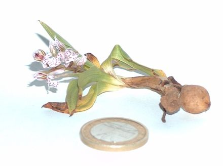

Orchids are plants that belong to the family Orchidaceae (/ˌɔːrkɪˈdeɪsi.iː, -si.aɪ/) a diverse and widespread group of flowering plants with blooms that are often colourful and fragrant. Orchids are cosmopolitan plants found in almost every habitat on Earth except glaciers. The world's richest diversity of orchid genera and species is found in the tropics. Orchidaceae, along with the Asteraceae, is one of the two largest families of flowering plants. It contains about 28,000 currently accepted species distributed across 763 general. The Orchidaceae family encompasses about 6–11% of all species of seed plants. The largest genera are Bulbophyllum (2,000 species), Epidendrum (1,500 species), Dendrobium (1,400 species), and Pleurothallis (1,000 species). It also includes Vanilla (the genus of the vanilla plant), the type genus Orchis, and many commonly cultivated plants such as Phalaenopsis and Cattleya. Moreover, since the introduction of tropical species into cultivation in the 19th century, horticulturists have produced many hybrids and cultivars.
All orchids are perennial herbs that lack any permanent woody structure. They can grow according to two patterns: Monopodial: The stem grows from a single bud, leaves are added from the apex each year, and the stem grows longer accordingly. The stem of orchids with a monopodial growth can reach several meters in length, as in Vanda and Vanilla. Sympodial: Sympodial orchids have a front (the newest growth) and a back (the oldest growth). The plant produces a series of adjacent shoots, which grow to a certain size, bloom, and then stop growing and are replaced. Sympodial orchids grow horizontally, rather than vertically, following the surface of their support. The growth continues by the development of new leads, with their leaves and roots, sprouting from or next to those of the previous year, as in Cattleya. While a new lead is developing, the rhizome may start its growth again from a so-called 'eye', an undeveloped bud, thereby branching. Sympodial orchids may have visible pseudobulbs joined by a rhizome, which creeps along the top or just beneath the soil
